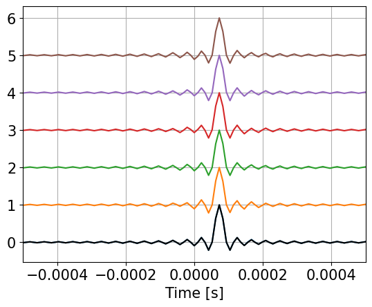
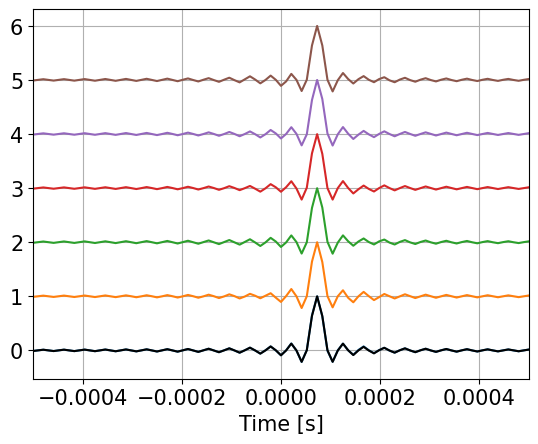

Direction finding with compact Volumetric Acoustic Sensor (cVAS)#
The following script demonstrates different methods to estimate the direction of sound sources using a comapct volumetric acoustic sensor. Sound sources are simulated to provide the opportunity to assess the quality of the direction estimations.
note to myself: jupyter nbconvert cVAS_direction.ipynb –to html
Loading libraries#
First, some basic libraries are imported and general parameter defined.
import numpy as np
import matplotlib.pyplot as plt
import scipy.signal as signal
import bioacoustic_tools as bat
plt.rc('font', size=15)
#
print(help(bat))
Help on module bioacoustic_tools:
NAME
bioacoustic_tools
DESCRIPTION
# %% [markdown]
# # bioacoustic tools
CLASSES
builtins.object
MC
class MC(builtins.object)
| MC(ho, hsel, sv)
|
| Methods defined here:
|
| __init__(self, ho, hsel, sv)
| Initialize self. See help(type(self)) for accurate signature.
|
| __proc_fft__(self, xx, nfft)
|
| __quadInt__(self, uu, imx, nd1)
|
| __str__(self)
| Return str(self).
|
| beamform(self, ss, aze, ele, fs, nw, nfft, step=None)
|
| directions(self, ss, fs, nw, step, nfft)
|
| process(self, ss, fs, nw, step, nfft)
|
| ----------------------------------------------------------------------
| Data descriptors defined here:
|
| __dict__
| dictionary for instance variables
|
| __weakref__
| list of weak references to the object
FUNCTIONS
B_path(hd, sd, bd)
D_path(hd, sd)
S_path(hd, sd)
arrayTransformer(ho, hsel)
array_delay(S, ho, fs=None)
beamForm(yy, DS)
brownNoise(f)
cosd(x)
dirIntensity(xx, DI, hsel, fs, nw, nfft)
dirPhase(ss, hsel, DI, nh=None)
dirTDOA(ss, DI, hsel, nd=256)
dirTDOA_0(zz, DI, hsel)
dirTDOA_fast(ss, DI, hsel, nd=256)
dirXcorr_stft(ss, fs, nw, nover, nfft, DI, hsel, nh)
directionFinding(xx, DI, hsel, fs, nw=None, nfft=None, nh=None, method=None)
estimates the direction of a sound source of array recordings
parameters
xx: multi-dimensional time series
DI: hydrophone array mapping function
fs: sampling frequency
nw: size of processing window, defautls to 256
nfft: fft size (if needed) defaults to window size
nh: number of positive taps (if needed, e.g hilbert transform)
method: processing method
'TDOA_0' : uses local maxima of whole tim series
'TDOA_fast' : uses time series maxima (hilbert transform)
'TDOA' : uses fft based cross-correlation
'Phase' : uses local phase differences
'STFT' : uses spectrogram
'XCORR' : uses spectrogram to cross correlate (no overlap-add)
returns:
Azx: Azimuth
Elx: Elevation
t: time axis
f: frequency axis (if applicable)
#
estIntensity(xx, DI, hsel, fs, nw, nfft)
estPhase(ss, hsel, DI, nh=None)
estTDOA(ss, DI, hsel, nd=256)
estTDOA_0(zz, DI, hsel)
estTDOA_fast(ss, DI, hsel, nd=256)
estXcorr_stft(ss, fs, nw, nover, nfft, DI, hsel, nh)
fft_filt(b, x, zi=None, nh=None)
Filter multi-channel time series with an FIR filter
Filter a data sequence, `x`, using a FIR filter given in `b`.
Filtering uses the overlap-add method converting both `x` and `b`
into frequency domain first. The FFT size is determined as the
next higher power of 2 of twice the length of `b`.
Parameters
----------
b : one-dimensional numpy array
The impulse response of the filter
x : numpy array
Signal to be filtered
zi : numpy array, optional
Initial condition of the filter, but in reality just the
runout of the previous computation. If `zi` is None or not
given, then zero initial state is assumed.
nh : time shift of result (group delay) defaults to half the FIR filter
Returns
-------
y : array
The output of the digital filter.
zf : array, optional
If `zi` is None, this is not returned, otherwise, `zf` holds the
final filter delay values.
genNoise(N, fo, fs, method)
getOctahedron(ro)
getTetrahedron(ro)
hilbert_filt(ss, nh)
lfm(f1, f2, t2, fs)
# %%
matched_filt(xx, ss)
pinkNoise(f)
quadInt(uu, imx, nd1)
#------------------------------------------------------------------
quadInt1(C, infft, dn)
shipNoise(f, fo)
signalPath(dx, dy, az, ho)
simMultiPath(hd, sd, dx, bd, az, ho, type)
sim_array(yy, DS, noise)
# %%
sind(x)
sinfm(fc, fm, fa, t2, fs)
stack(x)
tonal(fs, ax, fx)
xcorr_fft(xx, hsel, method=None)
FILE
c:\users\zimme\documents\bioacoustics\bioacoustic_tools.py
None
# cVAS hydrophones
ro=0.040 # m
DI,ho,hsel,D,L=bat.getOctahedron(ro)
print(ho)
print(0.75/L,'kHz')
[[ 4.00000000e-02 0.00000000e+00 -2.82842712e-02]
[-2.00000000e-02 3.46410162e-02 -2.82842712e-02]
[-2.00000000e-02 -3.46410162e-02 -2.82842712e-02]
[ 2.00000000e-02 3.46410162e-02 2.82842712e-02]
[-4.00000000e-02 4.89858720e-18 2.82842712e-02]
[ 2.00000000e-02 -3.46410162e-02 2.82842712e-02]]
[10.82531755 10.82531755 10.82531755 7.65465545 10.82531755 10.82531755
10.82531755 10.82531755 7.65465545 7.65465545 10.82531755 10.82531755
10.82531755 10.82531755 10.82531755] kHz
The print out presents the maximal frequencies that support phase-based operations. Dor 12 pairs the liniting frequency is 10.8 kHz, but for 3 pairs this upper frequency reduces to 7.6 kHz.
Simulation of cVAS sound reception from a deep source emitting linear frequency modulated (LFM) signal.#
The hydrophone measurements are simulated. Here a deep sound source emitting a 5 s LFM signal covering frequencies fro 0 to 24 kHz. The signal was choosen to cover twice the expected maximal bandwidth for coherent processing. As sampling frequency 96 kHz was choosen, to have multiple samples at the upper boundary of the LFM signal.
fs=96000
f1=1
f2=24000
t2=5
sso=bat.tonal(fs,1,bat.lfm(f1,f2,t2,fs))
tt=np.arange(sso.shape[0])/fs
ss=np.concatenate((np.zeros(fs),sso,np.zeros(fs)))
ts=np.arange(ss.shape[0])/fs
nw=256
f,t,Q= signal.stft(ss,fs=fs,nperseg=nw,noverlap=nw//2,nfft=2*nw)
#
ext=[t[0],t[-1],f[0]/1000,f[-1]/1000]
plt.imshow(np.abs(Q),aspect='auto',origin='lower',extent=ext)
plt.colorbar()
plt.xlabel('Time [s]')
plt.ylabel('Frequency [kHz]')
plt.show()
#simulate deep source
az=135*np.pi/180
bd=900 # bottom depth m
hd=500 # hydrophone depth m
sd=800 # source depth m
dx=100 # source distance m
Tx,el,rx=bat.simMultiPath(hd,sd,dx,bd,az,ho,'D') # Tx ms relative to array center
DS=np.array(Tx)*fs/1000 # DS samples from acoustic center
print(DS)
#
noise=0.01
xx=bat.sim_array(ss,DS,noise)
if 0:
plt.plot(0.4*xx/xx.max()+np.ones((xx.shape[0],1))*range(xx.shape[1]))
plt.show()
[ 1.1448668 2.49925878 1.50777504 -1.50777504 -1.1448668 -2.49925878]
Direction finding using sound intensity vector#
The implementation of the cVAS was diven by the observation that directionality of noise sources is best obtained by using sound intensity, which is a vector quantity. The following algorithm uses the spectrogram to obtain the sound intensity vector.
nw=256
nfft=2*nw
a,b,t,f,I = bat.directionFinding(xx,DI,hsel,fs,nw,nfft,method='STFT')
#
In=np.sqrt(np.sum(I**2,-1))
In[ 0,:]=In[ 1,:]
In[-1,:]=In[-2,:]
J=I/In.reshape(In.shape[0],In.shape[1],1)
In[ 0,:]=0
In[-1,:]=0
to=1
ext=(t[0],t[-1],f[0]/1000,f[-1]/1000)
fig, ax = plt.subplots(4, 1, num=0, clear=True, sharex=True, figsize=(10,12))
im=ax[0].imshow(In,origin='lower', aspect='auto',extent=ext)
ax[0].set_title('Power')
plt.colorbar(im)
#
im=ax[1].imshow(J[:,:,0],origin='lower', aspect='auto',extent=ext,clim=(-1,1))
ax[1].set_title('X-Component')
plt.colorbar(im)
#
im=ax[2].imshow(J[:,:,1],origin='lower', aspect='auto',extent=ext,clim=(-1,1))
ax[2].set_title('Y-Component')
plt.colorbar(im)
im=ax[3].imshow(J[:,:,2],origin='lower', aspect='auto',extent=ext,clim=(-1,1))
ax[3].set_xlabel('Time [s]')
ax[3].set_title('Z-Component')
plt.colorbar(im)
if 1:
for axx in ax:
axx.set_ylabel('Frequency [kHz]')
axx.hlines(0.75/np.max(L),to,to+t2,colors='w',linestyles='--')
axx.hlines(0.75/np.min(L),to,to+t2,colors='w',linestyles='--')
yl=[]
if len(yl)>0:
for axx in ax:
axx.set_ylim(yl)
xto=None
xto=-0.5
if xto != None:
for axx,itxt in zip(ax,range(ord('a'),ord('a')+len(ax))):
axx.text(xto,48,chr(itxt)+')')
#
plt.show()
fig, ax = plt.subplots(3, 1, num=0, clear=True, sharex=True, figsize=(10,10))
im=ax[0].imshow(In,origin='lower', aspect='auto',extent=ext)
ax[0].set_title('Power')
plt.colorbar(im)
#
im=ax[1].imshow(a,origin='lower', aspect='auto',extent=ext,clim=(-180,180))
ax[1].set_title('Azimuth')
plt.colorbar(im)
#
im=ax[2].imshow(b,origin='lower', aspect='auto',extent=ext,clim=(-90,90))
ax[2].set_xlabel('Time [s]')
ax[2].set_title('Elevation')
plt.colorbar(im)
if 1:
for axx in ax:
axx.set_ylabel('Frequency [kHz]')
axx.hlines(0.75/np.max(L),to,to+t2,colors='w',linestyles='--')
axx.hlines(0.75/np.min(L),to,to+t2,colors='w',linestyles='--')
yl=[]
if len(yl)>0:
for axx in ax:
axx.set_ylim(yl)
xto=None
xto=-0.5
if xto != None:
for axx,itxt in zip(ax,range(ord('a'),ord('a')+len(ax))):
axx.text(xto,48,chr(itxt)+')')
#
plt.show()
The figure shows the estimated azimuth and elevation angles as function of frequency versus time. The two horizontal dashed lines indicate the two spectral limits where phase-based operations are unique. The lower line considers all hydrophone pairs (including the 3 longer cross-diagonal ones) and the upper line corresonds to the 12 ‘normal’ hydrophone pairs.
Direction finding using phase differences#
azx,elx,t,f = bat.directionFinding(xx,DI,hsel,fs,method='Phase')
fr=f1+(f2-f1)*tt/t2
ifr=int(to*fs)+np.arange(len(fr),dtype='int')
frk=fr/1000
def Angle_plot(frx,azx,elx,Lm,scale):
fig = plt.figure("figsize",[10,5])
plt.plot(frx,azx,label='az')
plt.plot(frx,elx,label='el')
plt.plot(frx,180/np.pi*az+0*frx,'k--')
plt.plot(frx,180/np.pi*el+0*frx,'k--')
plt.vlines(np.min(Lm),-180,180,colors='k',linestyles='--')
plt.vlines(np.max(Lm),-180,180,colors='k',linestyles='--')
#plt.xlim(1e-4,24)
plt.gca().set_xscale(scale)
plt.legend()
plt.grid(True)
plt.xlabel('Frequency [kHz]')
plt.ylabel('Angle [°]')
plt.show()
Angle_plot(frk,azx[ifr],elx[ifr],0.75/L,'linear')
Angle_plot(frk,azx[ifr],elx[ifr],0.75/L,'log')
c:\Users\zimme\miniconda3\envs\cVAS\Lib\site-packages\IPython\core\pylabtools.py:170: UserWarning: Creating legend with loc="best" can be slow with large amounts of data.
fig.canvas.print_figure(bytes_io, **kw)
Direction finding using hydrophone spectrogram based cross correlation#
nh=1+int(np.ceil(np.max(L/1500*fs)))
nw=256
azx,elx,t,f=bat.directionFinding(xx,DI,hsel,fs,nw=nw,nfft=2*nw,nh=nh, method="XCORR")
#
nstep=nw//2
fx=np.zeros(ss.shape[0])
fx[:int(to*fs)]=np.nan
fx[int(to*fs):int((to+t2)*fs)]=fr
fx[int((to+t2)*fs):]=np.nan
fx1=fx[::nstep]
ifr=np.where(~np.isnan(fx1))
frk=fx1[ifr]/1000
Angle_plot(frk,azx[ifr],elx[ifr],0.75/L,'linear')
Angle_plot(frk,azx[ifr],elx[ifr],0.75/L,'log')
Direction finding using time-delay-of-arrival (tdoa) of matched filtered data#
As the signal is simulated as a linear frequency modulated time series, it is appropriate to pre-process the data using a matched filter to compress the signal into sharp transients. Using these shortened signals, standard time-delay-of arrival (tdoa) methods can be applied to obtain the direction of the sound source.
# matched filter of generated signal
zz=bat.matched_filt(sso,xx)
azx,elx,t,f,ux=bat.directionFinding(zz,DI,hsel,fs,method="TDOA_0")
print(azx,elx)
print(np.array([az,el])*180/np.pi)
tux=ux[:,0]/fs
n1,n2=zz.shape
n3=ux.shape[0]
plt.figure(figsize=(10,7))
plt.plot((ts-np.mean(tux))*1000,zz+np.ones((n1,1))*range(n2))
plt.plot((tux-np.mean(tux))*1000,ux[:,1]+np.arange(n3),'k.')
plt.xlim(-0.5,0.5)
plt.grid(True)
plt.xlabel('Time [ms]')
plt.show()
135.71845148771868 -71.37048304171563
[135. -71.56505118]
The figure shows the output of the matched filter for all hydrophones and the time delays are clearly visible. For each of the transient the time of the maximum was obtained by quadratic interpolation of 3 relevant samples. The estimated sound direction (azimuth and elevation) are very close to the simulated one.
aze=azx
ele=elx
print(aze,ele)
sv=1500
mc=bat.MC(ho,hsel,sv)
#
nw=256
nstep=128
nfft=512
uu = mc.beamform(zz,aze,ele,fs,nw,nfft) # long time series
#def stack(x): return x+np.ones((x.shape[0],1))*range(x.shape[1])
tso=3.5
plt.plot(ts-tso,bat.stack(zz))
plt.plot(ts-tso,uu,'k')
plt.grid(True)
plt.xlim(-0.0005,0.0005)
plt.show()
135.71845148771868 -71.37048304171563

io=int(3.5*fs)-128
zzz=zz[io:io+256,:]
plt.plot(np.arange(-128,128)/fs,bat.stack(zzz))
plt.xlabel('Time [s]')
plt.xlim(-5e-4,5e-4)
plt.grid(True)
plt.show()
uu,uuo=mc.beamform(zzz,aze,ele,fs,nw,nfft,0) # signle data snippet
plt.plot(np.arange(-128,128)/fs,bat.stack(uuo))
plt.plot(np.arange(-128,128)/fs,uu,'k')
plt.xlabel('Time [s]')
plt.xlim(-5e-4,5e-4)
plt.grid(True)
plt.show()
 
